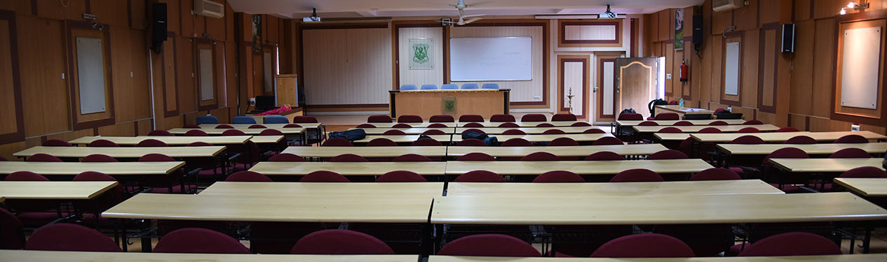
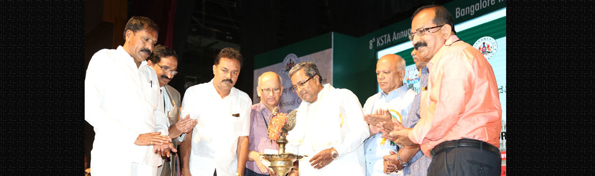
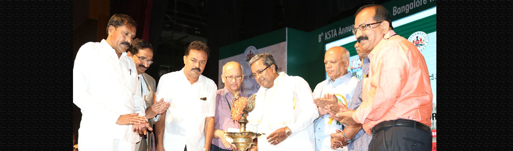

BANGALORE INSTITUTE OF TECHNOLOGY
welcome to BANGALORE INSTITUTE OF TECHNOLOGY
 Bangalore Institute of Technology was started in the year 1979 with the Intention of providing quality education in the field of technology and thereby serving our society.
It has reached enviable level of excellence in technical education. This was achieved by our staff and committed students, as well as very good infrastructure facilities provided by the management. The atmosphere in the college is quite conductive for learning and practicing the various disciplines of the Engineering. The all-round development of a student is given top priority in college.
BIT has always been at the forefront of modern technology and is credited with the introduction of the first full-fledged COMPUTER SCIENCE & ENGINEERING degree in Karnataka. Thus, the institute has identified future growth areas and incorporated various courses over the years. At present BIT has 9 undergraduate, 10 post graduate and Ph.D. course(s) and the intake of BIT is more than 4000.
The institute offers the Bachelor of Engineering (B.E.) Degree in Civil, Mechanical, Electrical and Electronics, Electronics and Communication, Computer Science, Electronics and Instrumentation Technology, Telecommunication, Information Science and Engineering and Industrial Engineering and Management.
There are a number of centers carrying out inter-disciplinary research and many collaborative programs exist between the college and other institutions, like IISc, N.A.L, etc. The chemistry department has been recognized as one of the latest research centers in the state of Karnataka. The college is also a program center for IGNOU. Teaching & research work is also amply supported by facilities such as central library with 90,000 volumes of text books and reference books, and an INDUSTRIAL CONSULTANCY AND RESEARCH CENTER. Besides this, the institute also offers the facilities like auditorium (1200 seating capacity), seminar hall, co-operative society, canteen, full-fledged sports and cultural sections as well as hostels for boys and girls.

 


click here for more info !
BIT OFFICIAL----- CONTACT US---- ADMISSIONS----